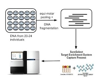
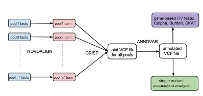

DNA pooling based association studies
The contribution of rare variants to phenotypic variation can be effectively surveyed through large-scale population re-sequencing studies. The availability of high-throughput target capture methods combined with the massive throughput of next-generation sequencing platforms has made it possible to interrogate thousands of genomic loci in a cost effective manner. In fact, the costs are so low that when one factors only the price to run the sequencer and the production of raw base reads, it is feasible to sequence megabases of DNA in thousands of individuals using a small number of sequencing runs. The budgetary bottleneck for such studies is not the sequencing cost but the cost of sample preparation for each individual sample prior to sequencing. Assuming that it costs ~200 dollars for target capture and library preparation, the sample preparation cost for a project with 2000 individuals alone would be $400,000. A simple strategy to reduce the per-sample cost while utilizing the massive capacity of current sequencers is to use DNA pooling prior to target capture and sample preparation. However, design and analysis of pooled DNA sequencing based association studies poses new challenges starting from variant calling and ending at association analysis. We have developed a number of tools for analyzing sequence data from pooled association studies and have applied these tools to association studies to studies for number of diseases including anorexia nervosa, type 2 diabetes and ALS.
 
1.
accurate variant detection and genotyping (both rare and common variants) from pooled sequence data: We have developed a statistical method, CRISP, that uses sequence data from multiple DNA pools to accurately detect rare variants. This method was first presented at the ISMB (Intelligent Systems for Molecular Biology Conference) in 2010 and has been continuously updated and improved ever since.
A software implementation of CRISP is available for download and source code is available from Github.
2. A
ssociation analysis for rare and common variants from pooled sequencing data: We have implemented methods for rare variant association analysis such as a simple burden test, SKAT, RareCover and Calpha. The pipeline also implements the Fisher's exact test for single variants. Source code and documentation is available on
Github.
3.
correction for population stratification or detection of ancestry outliers: We have developed an efficient method to estimate ancestry from aligned sequence reads that can also work with low-coverage sequence data as well as pooled sequencing experiments. This method is available
here
Sequencing study for type 2 diabetes
In collaboration with researchers at the University of Ulm, Germany and Sanofi-Aventis, we have sequenced ~140 genes in more than 6800 individuals with and without type 2 diabetes. The individuals were sequenced in pools of size 20 or 24. Analysis of the sequence data has identified several very rare variants (minor allele frequency < 0.002) that show association with type 2 diabetes.
References:
Bansal V. et al.
Targeted sequencing of genes associated with type 2 diabetes in 6800 individuals. American Socieity of Human Genetics meeting, 2014 (poster)